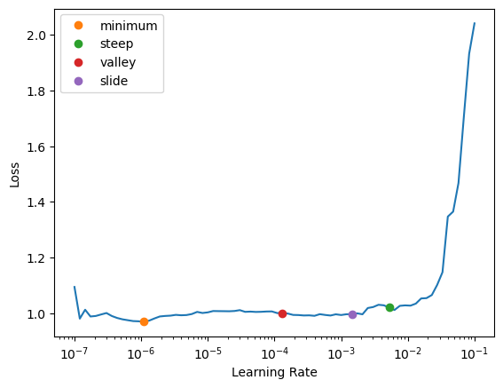
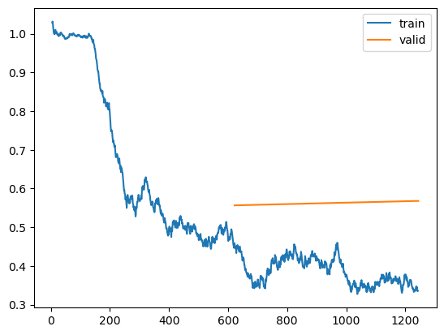

What we're running with at the time this documentation was generated:
torch: 1.12.1+cu102
fastai: 2.7.9
transformers: 4.22.0topic_segmentation
Configuration
print(os.environ["WANDB_PROJECT_NAME"])
print(os.environ["WANDB_TEAM"])course-copilot-ml
course-copilotTopicSegmentationConfig
TopicSegmentationConfig ()
A training.TrainConfig object training and tuning our segmentation models. Uses fastai and huggingface defaults by default
class ExampleCFG(TopicSegmentationConfig):
training_subset = 0.25
n_frozen_epochs = 0
n_unfrozen_epochs = 2[f"{k}: {v}" for k, v in training.get_train_config_props(ExampleCFG).items()][:5]['accum: None',
'adam_beta2: 0.99',
'adam_eps: 1e-07',
'batch_size: 8',
"custom_model_kwargs: {'p': 0.1, 'dropout_cls': <class 'torch.nn.modules.dropout.Dropout'>}"]Data
train_df, trn_idxs, val_idxs, raw_train_df = _get_training_data(
ExampleCFG, data_dir="../data", on_the_fly=False, split_type="cross_validation"
)print(len(train_df))
print(len(trn_idxs), len(val_idxs))
train_df.head(2)6196
4981 1215| index | course_title | lesson_num | topic | seq | prev_seq | next_seq | is_topic_end | next_topic_begin_seq | other_topic_seqs | |
|---|---|---|---|---|---|---|---|---|---|---|
| 0 | 23538 | parker - learn photography | 1 | Apertures Deep Dive | particular the detroit tigers so their wedding day was in that area | and if you recognize this letter d you know that's from detroit and in | and we were near the detroit tiger stadium if i had completely blurred out | False | NaN | [you fully understand how they work and how they can alter your final image now previously i demonstrated that the, larger the aperture the more the background is blurred out when it comes to the area in focus this is referred to, as the depth of field so the depth of field is the zone within a photo that, appears sharp and in focus when focusing on your subject that is considered the point of focus beyond that, how much appears in focus corresponds to the depth of field so here are two more, images and the amount of the depth of field in one is greater than the other, the first image i ca... |
| 1 | 6466 | Full Stack Deep Learning - Spring 2021 | 9 | Long Term Ethical Problems in AI | we basically need robots in order to have a functioning economy in the next few decades | brilliant person and this article which i recommend you click on talks about how | an interesting spin on this worry though is ai not necessarily replacing human labor | False | NaN | [a.i so the first i think a lot of people's minds go to autonomous weapons and maybe they go into a place that, is a little easy to dismiss as maybe far-fetched not realistic we don't have to worry about it it's just a movie, but of course as the saying goes the future is already here it's just not evenly distributed so, israel apparently has autonomous robo snipers on their borders today and just, i think last weekend or something there was an article about the new york city police deploying, the boston dynamics spot robot which actually anyone can buy now i think it's only like, 60 000 o... |
Hugging Face transformers objects
hf_arch, hf_config, hf_tokenizer, hf_model = _get_task_hf_objects(ExampleCFG)DataLoaders
SiameseBatchTokenizeTransform
SiameseBatchTokenizeTransform (use_next_pos_prob:float=0.75, use_adjacent_neg_prob:float=0.5, **kwargs)
Handles everything you need to assemble a mini-batch of inputs and targets, as well as decode the dictionary produced as a byproduct of the tokenization process in the encodes method.
| Type | Default | Details | |
|---|---|---|---|
| use_next_pos_prob | float | 0.75 | The probability we’ll use the positive examples next sequence vs another sequence in the same topic |
| use_adjacent_neg_prob | float | 0.5 | The probability we’ll use the negative example’s sequence in another topic vs. sequence in a completely different course |
| kwargs |
dls = _get_dls(ExampleCFG, train_df, hf_arch, hf_config, hf_tokenizer, hf_model, val_idxs_or_fold=val_idxs)b = dls.one_batch()
print(len(b))
print("")
print(hf_tokenizer.decode(b[0]["input_ids"][0]))
print("")
print(hf_tokenizer.decode(b[1]["input_ids"][0]))
print("")
print(b[2])3
[CLS] of three of them so, you know, you kind of... this is the idea, right?, as if somebody says to you: “i like this movie, this movie, this movie” and you're like: “oh, they like those movies too” what[SEP] other movies do you like? and they'll say: “oh, how about this?” there's a chance, good chance, that you're going to like the same thing. that's the basis of collaborative filtering, okay, it's...[SEP]
[CLS] of three of them so, you know, you kind of... this is the idea, right?, as if somebody says to you: “i like this movie, this movie, this movie” and you're like: “oh, they like those movies too” what[SEP] you're going to be really hungry and[SEP][PAD][PAD][PAD][PAD][PAD][PAD][PAD][PAD][PAD][PAD][PAD][PAD][PAD][PAD][PAD][PAD]
TensorCategory([0, 0, 0, 0, 0, 0, 0, 0], device='cuda:1')Models
blurr_splitter_on_backbone
blurr_splitter_on_backbone (m:fastai.torch_core.Module)
Creates two layer groups: One for the backbone and one for the pooler/classification head
blurr_splitter_with_head
blurr_splitter_with_head (m:fastai.torch_core.Module)
Simply adds an additional layer group to the classification head
MarginRankingLoss
MarginRankingLoss (pos_neg_scores, targs)
topic_seg_f1_score
topic_seg_f1_score (inps, targs)
TopicSegmentationModelWrapper
TopicSegmentationModelWrapper (hf_config:PretrainedConfig, hf_model:PreTrainedModel, dropout_cls:type=<class 'torch.nn.modules.dropout.Dropout'>, p:float=0.1, hf_model_kwargs:dict={})
This custom BaseModelWrapper allows to score our positive examples against our negative examples. A good model will be one where the former are assigned a value greater than the later.
| Type | Default | Details | |
|---|---|---|---|
| hf_config | PretrainedConfig | Our transformer’s configuration object | |
| hf_model | PreTrainedModel | Our transformer model | |
| dropout_cls | type | Dropout | The class we want to use for applying dropout |
| p | float | 0.1 | The amount of dropout to apply prior to our classification head |
| hf_model_kwargs | dict | {} | Any kwargs we want to be passed when the model is used for prediction |
Learner
learn = _get_learner(cfg=ExampleCFG, dls=dls, hf_config=hf_config, hf_model=hf_model, learner_path="../models")
fit_cbs = []
if ExampleCFG.max_grad_norm:
fit_cbs.append(GradientClip(max_norm=ExampleCFG.max_grad_norm))
if ExampleCFG.include_gradient_checkpointing:
fit_cbs.append(GradientCheckpointing())
if ExampleCFG.save_best_model:
fit_cbs.append(
SaveModelCallback(
monitor="valid_loss",
comp=np.less,
fname=f"temp_best_loss_topic_segmentation",
reset_on_fit=False,
)
)print(len(learn.opt.param_groups))2# learn.unfreeze()
# learn.summary()learn.unfreeze()
learn.lr_find(suggest_funcs=[minimum, steep, valley, slide])SuggestedLRs(minimum=1.0964781722577755e-07, steep=0.005248074419796467, valley=0.00013182566908653826, slide=0.0014454397605732083)
if ExampleCFG.random_seed:
set_seed(ExampleCFG.random_seed)
learn.fit_one_cycle(2, slice(1e-5, 1e-3), cbs=fit_cbs)| epoch | train_loss | valid_loss | topic_seg_f1_score | time |
|---|---|---|---|---|
| 0 | 0.456956 | 0.556683 | 0.781070 | 01:25 |
| 1 | 0.335876 | 0.568177 | 0.772840 | 01:25 |
Better model found at epoch 0 with valid_loss value: 0.5566829442977905.[f"{k}: {v}" for k, v in training.get_train_config_props(ExampleCFG).items()][:5]['accum: None',
'adam_beta2: 0.99',
'adam_eps: 1e-07',
'batch_size: 8',
"custom_model_kwargs: {'p': 0.1, 'dropout_cls': <class 'torch.nn.modules.dropout.Dropout'>}"]for m_name, m_val in zip(learn.recorder.metric_names[1:-1], learn.recorder.final_record):
print(m_name, m_val)train_loss 0.33587607741355896
valid_loss 0.5681771039962769
topic_seg_f1_score 0.7728395061728395learn.recorder.plot_loss()
learn.export("../models/test_topic_segmentation.pkl")Validation
depth_score_cal
depth_score_cal (scores)
| Details | |
|---|---|
| scores | The original scores assigned to each sequence in a course’s transcript |
val_course_titles = train_df.iloc[val_idxs]["course_title"].unique().tolist()
preds_df = _get_validation_preds(
hf_model,
hf_tokenizer,
raw_train_df,
val_course_titles[:2],
batch_size=16,
threshold_std_coeff=1.0,
)
print(len(preds_df))
preds_df.head()4628| level_0 | index | course_title | lesson_num | topic | seq | prev_seq | next_seq | is_topic_end | next_topic_begin_seq | other_topic_seqs | depth_score | threshold | pred_start | |
|---|---|---|---|---|---|---|---|---|---|---|---|---|---|---|
| 0 | 19012 | 19012 | markowskyart - begginer drawing course | 1 | Introduction | okay here we are welcome everybody wherever you are here on planet Earth | xxBEGIN_TOPICxx | I'm welcoming you into my studio here in Vancouver British Columbia Canada my | False | NaN | [name is Michael Markowski and I'm gonna be your drawing instructor for the next, hour or month depending on how many classes you decide to watch so it's, really exciting that there's I see 50 people who are watching right now which is really exciting to have a nice big, audience worth of people and I don't know how many comments have been pouring in here I was looking at a few of those, right started and people from a lot of people from British Columbia and it's great also to see a bunch of people who, have taken classes with me in the past so I guess that might mean I'm possibly, have do... | 0.001695 | 0.00322 | True |
| 1 | 19013 | 19013 | markowskyart - begginer drawing course | 1 | Introduction | I'm welcoming you into my studio here in Vancouver British Columbia Canada my | okay here we are welcome everybody wherever you are here on planet Earth | name is Michael Markowski and I'm gonna be your drawing instructor for the next | False | NaN | [okay here we are welcome everybody wherever you are here on planet Earth, hour or month depending on how many classes you decide to watch so it's, really exciting that there's I see 50 people who are watching right now which is really exciting to have a nice big, audience worth of people and I don't know how many comments have been pouring in here I was looking at a few of those, right started and people from a lot of people from British Columbia and it's great also to see a bunch of people who, have taken classes with me in the past so I guess that might mean I'm possibly, have done some... | 0.000806 | 0.00322 | False |
| 2 | 19014 | 19014 | markowskyart - begginer drawing course | 1 | Introduction | name is Michael Markowski and I'm gonna be your drawing instructor for the next | I'm welcoming you into my studio here in Vancouver British Columbia Canada my | hour or month depending on how many classes you decide to watch so it's | False | NaN | [okay here we are welcome everybody wherever you are here on planet Earth, I'm welcoming you into my studio here in Vancouver British Columbia Canada my, really exciting that there's I see 50 people who are watching right now which is really exciting to have a nice big, audience worth of people and I don't know how many comments have been pouring in here I was looking at a few of those, right started and people from a lot of people from British Columbia and it's great also to see a bunch of people who, have taken classes with me in the past so I guess that might mean I'm possibly, have don... | 0.000616 | 0.00322 | False |
| 3 | 19015 | 19015 | markowskyart - begginer drawing course | 1 | Introduction | hour or month depending on how many classes you decide to watch so it's | name is Michael Markowski and I'm gonna be your drawing instructor for the next | really exciting that there's I see 50 people who are watching right now which is really exciting to have a nice big | False | NaN | [okay here we are welcome everybody wherever you are here on planet Earth, I'm welcoming you into my studio here in Vancouver British Columbia Canada my, name is Michael Markowski and I'm gonna be your drawing instructor for the next, audience worth of people and I don't know how many comments have been pouring in here I was looking at a few of those, right started and people from a lot of people from British Columbia and it's great also to see a bunch of people who, have taken classes with me in the past so I guess that might mean I'm possibly, have done something right in the past and pe... | 0.000000 | 0.00322 | False |
| 4 | 19016 | 19016 | markowskyart - begginer drawing course | 1 | Introduction | really exciting that there's I see 50 people who are watching right now which is really exciting to have a nice big | hour or month depending on how many classes you decide to watch so it's | audience worth of people and I don't know how many comments have been pouring in here I was looking at a few of those | False | NaN | [okay here we are welcome everybody wherever you are here on planet Earth, I'm welcoming you into my studio here in Vancouver British Columbia Canada my, name is Michael Markowski and I'm gonna be your drawing instructor for the next, hour or month depending on how many classes you decide to watch so it's, right started and people from a lot of people from British Columbia and it's great also to see a bunch of people who, have taken classes with me in the past so I guess that might mean I'm possibly, have done something right in the past and people who've taken my photography, classes and ... | 0.004914 | 0.00322 | True |
Inference
raw_train_df = pd.read_csv(f"../data/clean/segmentation_train.csv", index_col=None)
val_course_title = "fast.ai 2022 - Part 1"
val_lesson_num = "4"
inf_df = raw_train_df[
(raw_train_df["course_title"] == val_course_title) & (raw_train_df["lesson_num"] == val_lesson_num)
].copy()
inf_df["transcript"] = inf_df["seq"]
inf_df.reset_index(inplace=True)
print(len(inf_df))
inf_df.head(2)709| index | course_title | lesson_num | topic | seq | prev_seq | next_seq | is_topic_end | next_topic_begin_seq | other_topic_seqs | transcript | |
|---|---|---|---|---|---|---|---|---|---|---|---|
| 0 | 15307 | fast.ai 2022 - Part 1 | 4 | Using Huggingface | Hi everybody, and welcome to Practical Deep Learning for Coders Lesson Four, which I think | xxBEGIN_TOPICxx | is the lesson that a lot of the regulars in the community have been most excited about, | False | NaN | ["because it's where we're gonna get some totally new material — totally new topic, we've", "never covered before. We're going to cover natural language processing (NLP), and you'll", "find there, there is indeed a chapter about that in the book, but we're going to do it in a totally different way to how it's done in the book. In the book we do NLP using the", 'fast.ai library, using recurrent neural networks (RNNs).', "Today we're going to do something else, which is we're going to do Transformers, and we're", "not even going to use the fast.ai library at all in fact. So, what we're going... | Hi everybody, and welcome to Practical Deep Learning for Coders Lesson Four, which I think |
| 1 | 15308 | fast.ai 2022 - Part 1 | 4 | Using Huggingface | is the lesson that a lot of the regulars in the community have been most excited about, | Hi everybody, and welcome to Practical Deep Learning for Coders Lesson Four, which I think | because it's where we're gonna get some totally new material — totally new topic, we've | False | NaN | ['Hi everybody, and welcome to Practical Deep Learning for Coders Lesson Four, which I think', "never covered before. We're going to cover natural language processing (NLP), and you'll", "find there, there is indeed a chapter about that in the book, but we're going to do it in a totally different way to how it's done in the book. In the book we do NLP using the", 'fast.ai library, using recurrent neural networks (RNNs).', "Today we're going to do something else, which is we're going to do Transformers, and we're", "not even going to use the fast.ai library at all in fact. So, what we're go... | is the lesson that a lot of the regulars in the community have been most excited about, |
preds_df, seg_idxs = _get_preds(learn, inf_df, threshold_std_coeff=1.0)
print(seg_idxs[:10])
print(len(preds_df))
preds_df.head()[0, 4, 16, 20, 23, 26, 30, 44, 47, 54]
709| index | course_title | lesson_num | topic | seq | prev_seq | next_seq | is_topic_end | next_topic_begin_seq | other_topic_seqs | transcript | depth_score | threshold | pred_start | |
|---|---|---|---|---|---|---|---|---|---|---|---|---|---|---|
| 0 | 15307 | fast.ai 2022 - Part 1 | 4 | Using Huggingface | Hi everybody, and welcome to Practical Deep Learning for Coders Lesson Four, which I think | xxBEGIN_TOPICxx | is the lesson that a lot of the regulars in the community have been most excited about, | False | NaN | ["because it's where we're gonna get some totally new material — totally new topic, we've", "never covered before. We're going to cover natural language processing (NLP), and you'll", "find there, there is indeed a chapter about that in the book, but we're going to do it in a totally different way to how it's done in the book. In the book we do NLP using the", 'fast.ai library, using recurrent neural networks (RNNs).', "Today we're going to do something else, which is we're going to do Transformers, and we're", "not even going to use the fast.ai library at all in fact. So, what we're going... | Hi everybody, and welcome to Practical Deep Learning for Coders Lesson Four, which I think | 0.001369 | 0.002255 | True |
| 1 | 15308 | fast.ai 2022 - Part 1 | 4 | Using Huggingface | is the lesson that a lot of the regulars in the community have been most excited about, | Hi everybody, and welcome to Practical Deep Learning for Coders Lesson Four, which I think | because it's where we're gonna get some totally new material — totally new topic, we've | False | NaN | ['Hi everybody, and welcome to Practical Deep Learning for Coders Lesson Four, which I think', "never covered before. We're going to cover natural language processing (NLP), and you'll", "find there, there is indeed a chapter about that in the book, but we're going to do it in a totally different way to how it's done in the book. In the book we do NLP using the", 'fast.ai library, using recurrent neural networks (RNNs).', "Today we're going to do something else, which is we're going to do Transformers, and we're", "not even going to use the fast.ai library at all in fact. So, what we're go... | is the lesson that a lot of the regulars in the community have been most excited about, | 0.000000 | 0.002255 | False |
| 2 | 15309 | fast.ai 2022 - Part 1 | 4 | Using Huggingface | because it's where we're gonna get some totally new material — totally new topic, we've | is the lesson that a lot of the regulars in the community have been most excited about, | never covered before. We're going to cover natural language processing (NLP), and you'll | False | NaN | ['Hi everybody, and welcome to Practical Deep Learning for Coders Lesson Four, which I think', 'is the lesson that a lot of the regulars in the community have been most excited about,', "find there, there is indeed a chapter about that in the book, but we're going to do it in a totally different way to how it's done in the book. In the book we do NLP using the", 'fast.ai library, using recurrent neural networks (RNNs).', "Today we're going to do something else, which is we're going to do Transformers, and we're", "not even going to use the fast.ai library at all in fact. So, what we're goi... | because it's where we're gonna get some totally new material — totally new topic, we've | 0.000203 | 0.002255 | False |
| 3 | 15310 | fast.ai 2022 - Part 1 | 4 | Using Huggingface | never covered before. We're going to cover natural language processing (NLP), and you'll | because it's where we're gonna get some totally new material — totally new topic, we've | find there, there is indeed a chapter about that in the book, but we're going to do it in a totally different way to how it's done in the book. In the book we do NLP using the | False | NaN | ['Hi everybody, and welcome to Practical Deep Learning for Coders Lesson Four, which I think', 'is the lesson that a lot of the regulars in the community have been most excited about,', "because it's where we're gonna get some totally new material — totally new topic, we've", 'fast.ai library, using recurrent neural networks (RNNs).', "Today we're going to do something else, which is we're going to do Transformers, and we're", "not even going to use the fast.ai library at all in fact. So, what we're going to be", "doing today is we're going to be fine-tuning a pre-trained NLP model using a... | never covered before. We're going to cover natural language processing (NLP), and you'll | 0.001102 | 0.002255 | False |
| 4 | 15311 | fast.ai 2022 - Part 1 | 4 | Using Huggingface | find there, there is indeed a chapter about that in the book, but we're going to do it in a totally different way to how it's done in the book. In the book we do NLP using the | never covered before. We're going to cover natural language processing (NLP), and you'll | fast.ai library, using recurrent neural networks (RNNs). | False | NaN | ['Hi everybody, and welcome to Practical Deep Learning for Coders Lesson Four, which I think', 'is the lesson that a lot of the regulars in the community have been most excited about,', "because it's where we're gonna get some totally new material — totally new topic, we've", "never covered before. We're going to cover natural language processing (NLP), and you'll", "Today we're going to do something else, which is we're going to do Transformers, and we're", "not even going to use the fast.ai library at all in fact. So, what we're going to be", "doing today is we're going to be fine-tuning... | find there, there is indeed a chapter about that in the book, but we're going to do it in a totally different way to how it's done in the book. In the book we do NLP using the | 0.002383 | 0.002255 | True |
try:
del learn
gc.collect()
torch.cuda.empty_cache()
except:
passModel Trainer
TopicSegmentationModelTrainer
TopicSegmentationModelTrainer (experiment_name:str, train_config:__main__.TopicSegmentationCon fig, data_path:str='data', model_output_path:str='models', log_output_path:str='logs', log_preds:bool=False, log_n_preds:int=None, use_wandb:bool=False, verbose:bool=False, **kwargs)
Helper class that provides a standard way to create an ABC using inheritance.
| Type | Default | Details | |
|---|---|---|---|
| experiment_name | str | The name of your experiment (e.g., deberta_v3_large). This value is used in conjunction with task whenlogging information with W&B or else saving data releveant to training/evaluation runs |
|
| train_config | TopicSegmentationConfig | The TopicSegmentationConfig |
|
| data_path | str | data | Where the project’s data is stored |
| model_output_path | str | models | Where exported Learners and other models should stored |
| log_output_path | str | logs | Where any logged data should be stored |
| log_preds | bool | False | Whether predictions should be logged |
| log_n_preds | int | None | The number of course predictions that should be logged |
| use_wandb | bool | False | Whether or not to log experiments and sweeps to W&B |
| verbose | bool | False | Whether or not you want to have printed out everything during a training/evaulation run |
| kwargs |
train
TopicSegmentationModelTrainer.train
TopicSegmentationModelTrainer.train (sweep_config:dict=None)
| Type | Default | Details | |
|---|---|---|---|
| sweep_config | dict | None | A dictionary providing the parameters and ranges for our sweep |
Example training code
trainer = TopicSegmentationModelTrainer(
experiment_name="test_topic_segmentation",
train_config=ExampleCFG,
data_path="../data",
model_output_path="../models",
log_output_path="../logs",
log_preds=True,
log_n_preds=2,
use_wandb=True,
verbose=True,
)
results_df, raw_df, train_df, train_val_idxs = trainer.train()
results_df.head()Failed to detect the name of this notebook, you can set it manually with the WANDB_NOTEBOOK_NAME environment variable to enable code saving.
wandb: Currently logged in as: ohmeow. Use `wandb login --relogin` to force relogin
wandb: Currently logged in as: ohmeow (course-copilot). Use `wandb login --relogin` to force relogin
wandb version 0.13.4 is available! To upgrade, please run:
$ pip install wandb --upgrade
Tracking run with wandb version 0.13.3
Run data is saved locally in
../logs/wandb/run-20221010_131156-mz9oyjue
Experiment: test_topic_segmentation
Training config: f{'accum': None, 'adam_beta2': 0.99, 'adam_eps': 1e-07, 'batch_size': 8, 'custom_model_kwargs': {'p': 0.1, 'dropout_cls': <class 'torch.nn.modules.dropout.Dropout'>}, 'frozen_lr': 0, 'hf_config_kwargs': {'num_labels': 2}, 'hf_model_checkpoint': 'microsoft/deberta-v3-small', 'hf_model_cls': 'AutoModelForSequenceClassification', 'hf_model_kwargs': {}, 'hf_tokenizer_kwargs': {}, 'include_gradient_checkpointing': False, 'include_labels': False, 'lower_case': True, 'max_grad_norm': None, 'max_length': True, 'n_frozen_epochs': 0, 'n_unfrozen_epochs': 2, 'new_special_tokens': None, 'one_cycle_moms_end': 0.8, 'one_cycle_moms_min': 0.7, 'one_cycle_moms_start': 0.8, 'only_seed_splits': True, 'preprocess_strategy': None, 'random_seed': 2022, 'save_best_model': True, 'tok_kwargs': {}, 'training_subset': 0.25, 'truncation_strategy': True, 'unfrozen_lr_max': 0.001, 'unfrozen_lr_min': 1e-05, 'use_adjacent_neg_prob': 0.5, 'use_fp16': True, 'use_next_pos_prob': 0.75, 'val_pct': 0.25, 'weight_decay': 0.0}
Preparing training data ...
Building HF objects ...
Building DataLoaders ...
Building Learner ...
Training ...
Could not gather input dimensions| epoch | train_loss | valid_loss | topic_seg_f1_score | time |
|---|---|---|---|---|
| 0 | 0.462488 | 0.582567 | 0.768724 | 01:27 |
| 1 | 0.384275 | 0.571569 | 0.759671 | 01:28 |
Better model found at epoch 0 with valid_loss value: 0.5825673341751099.
Better model found at epoch 1 with valid_loss value: 0.5715688467025757.
Could not gather input dimensionsLogging results ...
Getting predictions for validatation set ...
processing markowskyart - begginer drawing course: 1
processing markowskyart - begginer drawing course: 2
processing markowskyart - begginer drawing course: 3
processing markowskyart - begginer drawing course: 4
processing markowskyart - begginer drawing course: 5
processing cc - how to invest in stocks: 1
Saving model ...
Waiting for W&B process to finish... (success).
Run history:
| epoch | ▁▁▁▁▂▂▂▂▂▃▃▃▃▃▃▄▄▄▄▄▄▅▅▅▅▅▆▆▆▆▆▇▇▇▇▇▇███ |
| eps_0 | ▁▁▁▁▁▁▁▁▁▁▁▁▁▁▁▁▁▁▁▁▁▁▁▁▁▁▁▁▁▁▁▁▁▁▁▁▁▁▁▁ |
| eps_1 | ▁▁▁▁▁▁▁▁▁▁▁▁▁▁▁▁▁▁▁▁▁▁▁▁▁▁▁▁▁▁▁▁▁▁▁▁▁▁▁▁ |
| lr_0 | ▁▁▂▃▄▅▆▇▇██████▇▇▇▇▆▆▆▆▅▅▄▄▄▃▃▃▂▂▂▂▁▁▁▁▁ |
| lr_1 | ▁▁▂▃▄▅▆▇▇██████▇▇▇▇▆▆▆▆▅▅▄▄▄▃▃▃▂▂▂▂▁▁▁▁▁ |
| mom_0 | ██▇▇▅▄▃▂▂▁▁▁▁▁▁▂▂▂▂▃▃▃▃▄▄▅▅▅▆▆▆▇▇▇▇█████ |
| mom_1 | ██▇▇▅▄▃▂▂▁▁▁▁▁▁▂▂▂▂▃▃▃▃▄▄▅▅▅▆▆▆▇▇▇▇█████ |
| raw_loss | ███▇▇▅█▃▄▂▂█▇▇▃▃▁▂▃▁▁▄▅▁▂▃▄▃▅▃▆▂▃▄▃▃▁▆▅▆ |
| sqr_mom_0 | ▁▁▁▁▁▁▁▁▁▁▁▁▁▁▁▁▁▁▁▁▁▁▁▁▁▁▁▁▁▁▁▁▁▁▁▁▁▁▁▁ |
| sqr_mom_1 | ▁▁▁▁▁▁▁▁▁▁▁▁▁▁▁▁▁▁▁▁▁▁▁▁▁▁▁▁▁▁▁▁▁▁▁▁▁▁▁▁ |
| topic_seg_f1_score | █▁ |
| train_loss | █████▇▆▄▄▄▃▃▃▃▃▃▃▂▂▂▂▂▂▂▂▁▂▂▂▂▂▁▁▁▁▂▂▂▂▂ |
| train_samples_per_sec | ▁▄▅█▂▅█▄▆▄▇▅▄█▅█▅▃▇▇▃▄▃▅▅▃▄▃▄▅▃▅▆▆▇▅▅▆▂▂ |
| valid_loss | █▁ |
| wd_0 | ▁▁▁▁▁▁▁▁▁▁▁▁▁▁▁▁▁▁▁▁▁▁▁▁▁▁▁▁▁▁▁▁▁▁▁▁▁▁▁▁ |
| wd_1 | ▁▁▁▁▁▁▁▁▁▁▁▁▁▁▁▁▁▁▁▁▁▁▁▁▁▁▁▁▁▁▁▁▁▁▁▁▁▁▁▁ |
Run summary:
| epoch | 2 |
| eps_0 | 0.0 |
| eps_1 | 0.0 |
| lr_0 | 0.0 |
| lr_1 | 0.0 |
| mom_0 | 0.8 |
| mom_1 | 0.8 |
| raw_loss | 0.19263 |
| sqr_mom_0 | 0.99 |
| sqr_mom_1 | 0.99 |
| state | completed |
| topic_seg_f1_score | 0.75802 |
| train_loss | 0.38427 |
| train_samples_per_sec | 28.17576 |
| valid_loss | 0.5866 |
| wd_0 | 0.0 |
| wd_1 | 0.0 |
Synced tough-eon-1: https://wandb.ai/course-copilot/course-copilot-ml-topic_segmentation/runs/mz9oyjue
Synced 6 W&B file(s), 1 media file(s), 1 artifact file(s) and 0 other file(s)
Synced 6 W&B file(s), 1 media file(s), 1 artifact file(s) and 0 other file(s)
Find logs at:
../logs/wandb/run-20221010_131156-mz9oyjue/logs
End training| accum | adam_beta2 | adam_eps | batch_size | custom_model_kwargs | frozen_lr | hf_config_kwargs | hf_model_checkpoint | hf_model_cls | hf_model_kwargs | ... | unfrozen_lr_max | unfrozen_lr_min | use_adjacent_neg_prob | use_fp16 | use_next_pos_prob | val_pct | weight_decay | valid_loss | topic_seg_f1_score | time | |
|---|---|---|---|---|---|---|---|---|---|---|---|---|---|---|---|---|---|---|---|---|---|
| 0 | None | 0.99 | 1.000000e-07 | 8 | {'p': 0.1, 'dropout_cls': <class 'torch.nn.modules.dropout.Dropout'>} | 0 | {'num_labels': 2} | microsoft/deberta-v3-small | AutoModelForSequenceClassification | {} | ... | 0.001 | 0.00001 | 0.5 | True | 0.75 | 0.25 | 0.0 | 0.586599 | 0.758025 | 202.285863 |
1 rows × 39 columns
get_preds
TopicSegmentationModelTrainer.get_preds
TopicSegmentationModelTrainer.get_preds (model_or_learner, data:pandas.core.frame.DataFrame , **kwargs)
| Type | Details | |
|---|---|---|
| model_or_learner | The Learner we want to use for inference |
|
| data | pd.DataFrame | The data we want to get predictions on (must include a column named ‘transcript’ at minimum) |
| kwargs | ||
| Returns | tuple[pd.DataFrame, list[int]] | Returns data (including topic segmentation boundaris and scores) and indicies of predicted topic starts |
Example inference code
trainer = TopicSegmentationModelTrainer(
"test_topic_segmentation", ExampleCFG, "../data", "../models", "../logs", verbose=True
)
# results_df, train_df, val_idxs = trainer.train()
inf_learn = trainer.load_learner_or_model(device="cpu")
preds_df, pred_topic_idxs = trainer.get_preds(inf_learn, inf_df[["topic", "transcript"]].copy())
# cleanup resources
del inf_learn
torch.cuda.empty_cache()
gc.collect()
# shows final results
print(pred_topic_idxs[:10])
preds_df.head()[0, 4, 16, 20, 23, 26, 30, 44, 47, 54]| topic | transcript | depth_score | threshold | pred_start | |
|---|---|---|---|---|---|
| 0 | Using Huggingface | Hi everybody, and welcome to Practical Deep Learning for Coders Lesson Four, which I think | 0.001369 | 0.002255 | True |
| 1 | Using Huggingface | is the lesson that a lot of the regulars in the community have been most excited about, | 0.000000 | 0.002255 | False |
| 2 | Using Huggingface | because it's where we're gonna get some totally new material — totally new topic, we've | 0.000203 | 0.002255 | False |
| 3 | Using Huggingface | never covered before. We're going to cover natural language processing (NLP), and you'll | 0.001102 | 0.002255 | False |
| 4 | Using Huggingface | find there, there is indeed a chapter about that in the book, but we're going to do it in a totally different way to how it's done in the book. In the book we do NLP using the | 0.002383 | 0.002255 | True |
tune
trainer = TopicSegmentationModelTrainer(
experiment_name="test_topic_segmentation",
train_config=ExampleCFG,
data_path="../data",
model_output_path="../models",
log_output_path="../logs",
log_preds=False,
log_n_preds=None,
use_wandb=True,
verbose=True,
)
sweep_id = trainer.configure_sweep(sweep_config=default_sweep_config)Create sweep with ID: 2nqt78ll
Sweep URL: https://wandb.ai/course-copilot/course-copilot-ml-topic_segmentation/sweeps/2nqt78llwandb.agent(sweep_id, function=partial(trainer.train, sweep_config=default_sweep_config), count=5)wandb: Agent Starting Run: wvxi3n4n with config:
wandb: unfrozen_lr_max: 0.0002964642653616338
wandb: unfrozen_lr_min: 8.666728243468805e-05
Failed to detect the name of this notebook, you can set it manually with the WANDB_NOTEBOOK_NAME environment variable to enable code saving.
wandb: WARNING Ignored wandb.init() arg project when running a sweep.
wandb: WARNING Ignored wandb.init() arg entity when running a sweep.
wandb version 0.13.4 is available! To upgrade, please run:
$ pip install wandb --upgrade
Tracking run with wandb version 0.13.3
Run data is saved locally in
../logs/wandb/run-20221010_131806-wvxi3n4n
Syncing run earthy-sweep-1 to Weights & Biases (docs)
Sweep page: https://wandb.ai/course-copilot/course-copilot-ml-topic_segmentation/sweeps/2nqt78ll
Sweep page: https://wandb.ai/course-copilot/course-copilot-ml-topic_segmentation/sweeps/2nqt78ll
Experiment: test_topic_segmentation
Training config: f{'accum': None, 'adam_beta2': 0.99, 'adam_eps': 1e-07, 'batch_size': 8, 'custom_model_kwargs': {'p': 0.1, 'dropout_cls': <class 'torch.nn.modules.dropout.Dropout'>}, 'frozen_lr': 0, 'hf_config_kwargs': {'num_labels': 2}, 'hf_model_checkpoint': 'microsoft/deberta-v3-small', 'hf_model_cls': 'AutoModelForSequenceClassification', 'hf_model_kwargs': {}, 'hf_tokenizer_kwargs': {}, 'include_gradient_checkpointing': False, 'include_labels': False, 'lower_case': True, 'max_grad_norm': None, 'max_length': True, 'n_frozen_epochs': 0, 'n_unfrozen_epochs': 2, 'new_special_tokens': None, 'one_cycle_moms_end': 0.8, 'one_cycle_moms_min': 0.7, 'one_cycle_moms_start': 0.8, 'only_seed_splits': True, 'preprocess_strategy': None, 'random_seed': 2022, 'save_best_model': True, 'tok_kwargs': {}, 'training_subset': 0.25, 'truncation_strategy': True, 'unfrozen_lr_max': 0.0002964642653616338, 'unfrozen_lr_min': 8.666728243468805e-05, 'use_adjacent_neg_prob': 0.5, 'use_fp16': True, 'use_next_pos_prob': 0.75, 'val_pct': 0.25, 'weight_decay': 0.0}
Preparing training data ...
Building HF objects ...
Building DataLoaders ...
Building Learner ...
Training ...| epoch | train_loss | valid_loss | topic_seg_f1_score | time |
|---|---|---|---|---|
| 0 | 0.434889 | 0.607325 | 0.763786 | 01:27 |
| 1 | 0.297782 | 0.579850 | 0.768724 | 01:27 |
Better model found at epoch 0 with valid_loss value: 0.6073254942893982.
Better model found at epoch 1 with valid_loss value: 0.5798501968383789.End training
Waiting for W&B process to finish... (success).
Run history:
| topic_seg_f1_score | ▁ |
| valid_loss | ▁ |
Run summary:
| topic_seg_f1_score | 0.77366 |
| valid_loss | 0.58265 |
Synced earthy-sweep-1: https://wandb.ai/course-copilot/course-copilot-ml-topic_segmentation/runs/wvxi3n4n
Synced 6 W&B file(s), 0 media file(s), 0 artifact file(s) and 0 other file(s)
Synced 6 W&B file(s), 0 media file(s), 0 artifact file(s) and 0 other file(s)
Find logs at:
../logs/wandb/run-20221010_131806-wvxi3n4n/logs
wandb: Agent Starting Run: l5r5816d with config:
wandb: unfrozen_lr_max: 0.0002667648067607438
wandb: unfrozen_lr_min: 4.856146061559808e-05
Failed to detect the name of this notebook, you can set it manually with the WANDB_NOTEBOOK_NAME environment variable to enable code saving.
wandb: WARNING Ignored wandb.init() arg project when running a sweep.
wandb: WARNING Ignored wandb.init() arg entity when running a sweep.
wandb version 0.13.4 is available! To upgrade, please run:
$ pip install wandb --upgrade
Tracking run with wandb version 0.13.3
Run data is saved locally in
../logs/wandb/run-20221010_132215-l5r5816d
Syncing run rich-sweep-2 to Weights & Biases (docs)
Sweep page: https://wandb.ai/course-copilot/course-copilot-ml-topic_segmentation/sweeps/2nqt78ll
Sweep page: https://wandb.ai/course-copilot/course-copilot-ml-topic_segmentation/sweeps/2nqt78ll
Experiment: test_topic_segmentation
Training config: f{'accum': None, 'adam_beta2': 0.99, 'adam_eps': 1e-07, 'batch_size': 8, 'custom_model_kwargs': {'p': 0.1, 'dropout_cls': <class 'torch.nn.modules.dropout.Dropout'>}, 'frozen_lr': 0, 'hf_config_kwargs': {'num_labels': 2}, 'hf_model_checkpoint': 'microsoft/deberta-v3-small', 'hf_model_cls': 'AutoModelForSequenceClassification', 'hf_model_kwargs': {}, 'hf_tokenizer_kwargs': {}, 'include_gradient_checkpointing': False, 'include_labels': False, 'lower_case': True, 'max_grad_norm': None, 'max_length': True, 'n_frozen_epochs': 0, 'n_unfrozen_epochs': 2, 'new_special_tokens': None, 'one_cycle_moms_end': 0.8, 'one_cycle_moms_min': 0.7, 'one_cycle_moms_start': 0.8, 'only_seed_splits': True, 'preprocess_strategy': None, 'random_seed': 2022, 'save_best_model': True, 'tok_kwargs': {}, 'training_subset': 0.25, 'truncation_strategy': True, 'unfrozen_lr_max': 0.0002667648067607438, 'unfrozen_lr_min': 4.856146061559808e-05, 'use_adjacent_neg_prob': 0.5, 'use_fp16': True, 'use_next_pos_prob': 0.75, 'val_pct': 0.25, 'weight_decay': 0.0}
Preparing training data ...
Building HF objects ...
Building DataLoaders ...
Building Learner ...
Training ...| epoch | train_loss | valid_loss | topic_seg_f1_score | time |
|---|---|---|---|---|
| 0 | 0.395206 | 0.567065 | 0.772840 | 01:25 |
| 1 | 0.289024 | 0.579308 | 0.767901 | 01:25 |
Better model found at epoch 0 with valid_loss value: 0.5670649409294128.End training
Waiting for W&B process to finish... (success).
Run history:
| topic_seg_f1_score | ▁ |
| valid_loss | ▁ |
Run summary:
| topic_seg_f1_score | 0.75802 |
| valid_loss | 0.59401 |
Synced rich-sweep-2: https://wandb.ai/course-copilot/course-copilot-ml-topic_segmentation/runs/l5r5816d
Synced 6 W&B file(s), 0 media file(s), 0 artifact file(s) and 0 other file(s)
Synced 6 W&B file(s), 0 media file(s), 0 artifact file(s) and 0 other file(s)
Find logs at:
../logs/wandb/run-20221010_132215-l5r5816d/logs
wandb: Agent Starting Run: 3x9bljp5 with config:
wandb: unfrozen_lr_max: 0.00014688870658243158
wandb: unfrozen_lr_min: 9.855246064537064e-05
Failed to detect the name of this notebook, you can set it manually with the WANDB_NOTEBOOK_NAME environment variable to enable code saving.
wandb: WARNING Ignored wandb.init() arg project when running a sweep.
wandb: WARNING Ignored wandb.init() arg entity when running a sweep.
wandb version 0.13.4 is available! To upgrade, please run:
$ pip install wandb --upgrade
Tracking run with wandb version 0.13.3
Run data is saved locally in
../logs/wandb/run-20221010_132551-3x9bljp5
Syncing run true-sweep-3 to Weights & Biases (docs)
Sweep page: https://wandb.ai/course-copilot/course-copilot-ml-topic_segmentation/sweeps/2nqt78ll
Sweep page: https://wandb.ai/course-copilot/course-copilot-ml-topic_segmentation/sweeps/2nqt78ll
Experiment: test_topic_segmentation
Training config: f{'accum': None, 'adam_beta2': 0.99, 'adam_eps': 1e-07, 'batch_size': 8, 'custom_model_kwargs': {'p': 0.1, 'dropout_cls': <class 'torch.nn.modules.dropout.Dropout'>}, 'frozen_lr': 0, 'hf_config_kwargs': {'num_labels': 2}, 'hf_model_checkpoint': 'microsoft/deberta-v3-small', 'hf_model_cls': 'AutoModelForSequenceClassification', 'hf_model_kwargs': {}, 'hf_tokenizer_kwargs': {}, 'include_gradient_checkpointing': False, 'include_labels': False, 'lower_case': True, 'max_grad_norm': None, 'max_length': True, 'n_frozen_epochs': 0, 'n_unfrozen_epochs': 2, 'new_special_tokens': None, 'one_cycle_moms_end': 0.8, 'one_cycle_moms_min': 0.7, 'one_cycle_moms_start': 0.8, 'only_seed_splits': True, 'preprocess_strategy': None, 'random_seed': 2022, 'save_best_model': True, 'tok_kwargs': {}, 'training_subset': 0.25, 'truncation_strategy': True, 'unfrozen_lr_max': 0.00014688870658243158, 'unfrozen_lr_min': 9.855246064537064e-05, 'use_adjacent_neg_prob': 0.5, 'use_fp16': True, 'use_next_pos_prob': 0.75, 'val_pct': 0.25, 'weight_decay': 0.0}
Preparing training data ...
Building HF objects ...
Building DataLoaders ...
Building Learner ...
Training ...| epoch | train_loss | valid_loss | topic_seg_f1_score | time |
|---|---|---|---|---|
| 0 | 0.457043 | 0.659170 | 0.729218 | 01:25 |
| 1 | 0.266419 | 0.602764 | 0.770370 | 01:25 |
Better model found at epoch 0 with valid_loss value: 0.6591702103614807.
Better model found at epoch 1 with valid_loss value: 0.6027644276618958.End training
Waiting for W&B process to finish... (success).
Run history:
| topic_seg_f1_score | ▁ |
| valid_loss | ▁ |
Run summary:
| topic_seg_f1_score | 0.75473 |
| valid_loss | 0.62178 |
Synced true-sweep-3: https://wandb.ai/course-copilot/course-copilot-ml-topic_segmentation/runs/3x9bljp5
Synced 6 W&B file(s), 0 media file(s), 0 artifact file(s) and 0 other file(s)
Synced 6 W&B file(s), 0 media file(s), 0 artifact file(s) and 0 other file(s)
Find logs at:
../logs/wandb/run-20221010_132551-3x9bljp5/logs
wandb: Agent Starting Run: xf8n2hrc with config:
wandb: unfrozen_lr_max: 0.0008400970402462487
wandb: unfrozen_lr_min: 8.196114939228642e-05
Failed to detect the name of this notebook, you can set it manually with the WANDB_NOTEBOOK_NAME environment variable to enable code saving.
wandb: WARNING Ignored wandb.init() arg project when running a sweep.
wandb: WARNING Ignored wandb.init() arg entity when running a sweep.
wandb version 0.13.4 is available! To upgrade, please run:
$ pip install wandb --upgrade
Tracking run with wandb version 0.13.3
Run data is saved locally in
../logs/wandb/run-20221010_132924-xf8n2hrc
Syncing run atomic-sweep-4 to Weights & Biases (docs)
Sweep page: https://wandb.ai/course-copilot/course-copilot-ml-topic_segmentation/sweeps/2nqt78ll
Sweep page: https://wandb.ai/course-copilot/course-copilot-ml-topic_segmentation/sweeps/2nqt78ll
Experiment: test_topic_segmentation
Training config: f{'accum': None, 'adam_beta2': 0.99, 'adam_eps': 1e-07, 'batch_size': 8, 'custom_model_kwargs': {'p': 0.1, 'dropout_cls': <class 'torch.nn.modules.dropout.Dropout'>}, 'frozen_lr': 0, 'hf_config_kwargs': {'num_labels': 2}, 'hf_model_checkpoint': 'microsoft/deberta-v3-small', 'hf_model_cls': 'AutoModelForSequenceClassification', 'hf_model_kwargs': {}, 'hf_tokenizer_kwargs': {}, 'include_gradient_checkpointing': False, 'include_labels': False, 'lower_case': True, 'max_grad_norm': None, 'max_length': True, 'n_frozen_epochs': 0, 'n_unfrozen_epochs': 2, 'new_special_tokens': None, 'one_cycle_moms_end': 0.8, 'one_cycle_moms_min': 0.7, 'one_cycle_moms_start': 0.8, 'only_seed_splits': True, 'preprocess_strategy': None, 'random_seed': 2022, 'save_best_model': True, 'tok_kwargs': {}, 'training_subset': 0.25, 'truncation_strategy': True, 'unfrozen_lr_max': 0.0008400970402462487, 'unfrozen_lr_min': 8.196114939228642e-05, 'use_adjacent_neg_prob': 0.5, 'use_fp16': True, 'use_next_pos_prob': 0.75, 'val_pct': 0.25, 'weight_decay': 0.0}
Preparing training data ...
Building HF objects ...
Building DataLoaders ...
Building Learner ...
Training ...| epoch | train_loss | valid_loss | topic_seg_f1_score | time |
|---|---|---|---|---|
| 0 | 0.396438 | 0.553289 | 0.798354 | 01:25 |
| 1 | 0.272380 | 0.460504 | 0.811523 | 01:25 |
Better model found at epoch 0 with valid_loss value: 0.5532887578010559.
Better model found at epoch 1 with valid_loss value: 0.4605042636394501.End training
Waiting for W&B process to finish... (success).
Run history:
| topic_seg_f1_score | ▁ |
| valid_loss | ▁ |
Run summary:
| topic_seg_f1_score | 0.80658 |
| valid_loss | 0.46773 |
Synced atomic-sweep-4: https://wandb.ai/course-copilot/course-copilot-ml-topic_segmentation/runs/xf8n2hrc
Synced 6 W&B file(s), 0 media file(s), 0 artifact file(s) and 0 other file(s)
Synced 6 W&B file(s), 0 media file(s), 0 artifact file(s) and 0 other file(s)
Find logs at:
../logs/wandb/run-20221010_132924-xf8n2hrc/logs
wandb: Agent Starting Run: 6kb77a8z with config:
wandb: unfrozen_lr_max: 0.0006178585838591866
wandb: unfrozen_lr_min: 1.6556729698366223e-05
Failed to detect the name of this notebook, you can set it manually with the WANDB_NOTEBOOK_NAME environment variable to enable code saving.
wandb: WARNING Ignored wandb.init() arg project when running a sweep.
wandb: WARNING Ignored wandb.init() arg entity when running a sweep.
wandb version 0.13.4 is available! To upgrade, please run:
$ pip install wandb --upgrade
Tracking run with wandb version 0.13.3
Run data is saved locally in
../logs/wandb/run-20221010_133257-6kb77a8z
Syncing run splendid-sweep-5 to Weights & Biases (docs)
Sweep page: https://wandb.ai/course-copilot/course-copilot-ml-topic_segmentation/sweeps/2nqt78ll
Sweep page: https://wandb.ai/course-copilot/course-copilot-ml-topic_segmentation/sweeps/2nqt78ll
Experiment: test_topic_segmentation
Training config: f{'accum': None, 'adam_beta2': 0.99, 'adam_eps': 1e-07, 'batch_size': 8, 'custom_model_kwargs': {'p': 0.1, 'dropout_cls': <class 'torch.nn.modules.dropout.Dropout'>}, 'frozen_lr': 0, 'hf_config_kwargs': {'num_labels': 2}, 'hf_model_checkpoint': 'microsoft/deberta-v3-small', 'hf_model_cls': 'AutoModelForSequenceClassification', 'hf_model_kwargs': {}, 'hf_tokenizer_kwargs': {}, 'include_gradient_checkpointing': False, 'include_labels': False, 'lower_case': True, 'max_grad_norm': None, 'max_length': True, 'n_frozen_epochs': 0, 'n_unfrozen_epochs': 2, 'new_special_tokens': None, 'one_cycle_moms_end': 0.8, 'one_cycle_moms_min': 0.7, 'one_cycle_moms_start': 0.8, 'only_seed_splits': True, 'preprocess_strategy': None, 'random_seed': 2022, 'save_best_model': True, 'tok_kwargs': {}, 'training_subset': 0.25, 'truncation_strategy': True, 'unfrozen_lr_max': 0.0006178585838591866, 'unfrozen_lr_min': 1.6556729698366223e-05, 'use_adjacent_neg_prob': 0.5, 'use_fp16': True, 'use_next_pos_prob': 0.75, 'val_pct': 0.25, 'weight_decay': 0.0}
Preparing training data ...
Building HF objects ...
Building DataLoaders ...
Building Learner ...
Training ...| epoch | train_loss | valid_loss | topic_seg_f1_score | time |
|---|---|---|---|---|
| 0 | 0.423982 | 0.563763 | 0.781893 | 01:26 |
| 1 | 0.333860 | 0.548688 | 0.783539 | 01:26 |
Better model found at epoch 0 with valid_loss value: 0.5637626647949219.
Better model found at epoch 1 with valid_loss value: 0.5486881136894226.End training
Waiting for W&B process to finish... (success).
Run history:
| topic_seg_f1_score | ▁ |
| valid_loss | ▁ |
Run summary:
| topic_seg_f1_score | 0.78354 |
| valid_loss | 0.56118 |
Synced splendid-sweep-5: https://wandb.ai/course-copilot/course-copilot-ml-topic_segmentation/runs/6kb77a8z
Synced 6 W&B file(s), 0 media file(s), 0 artifact file(s) and 0 other file(s)
Synced 6 W&B file(s), 0 media file(s), 0 artifact file(s) and 0 other file(s)
Find logs at:
../logs/wandb/run-20221010_133257-6kb77a8z/logs